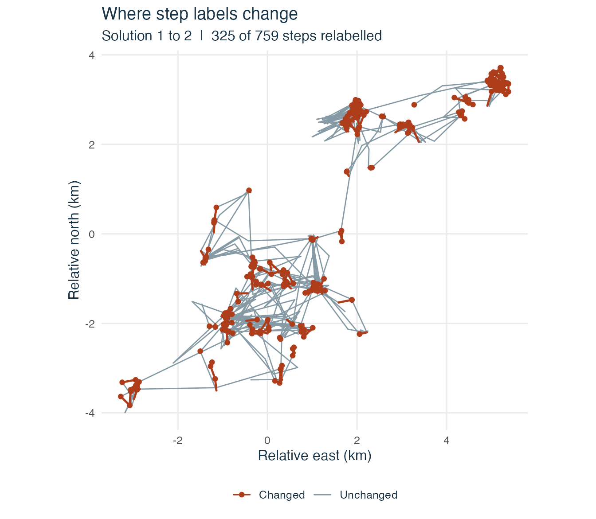
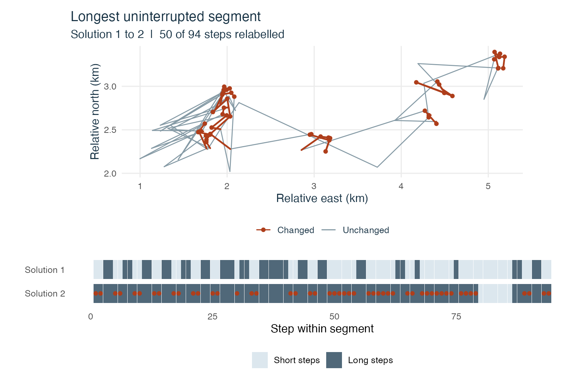
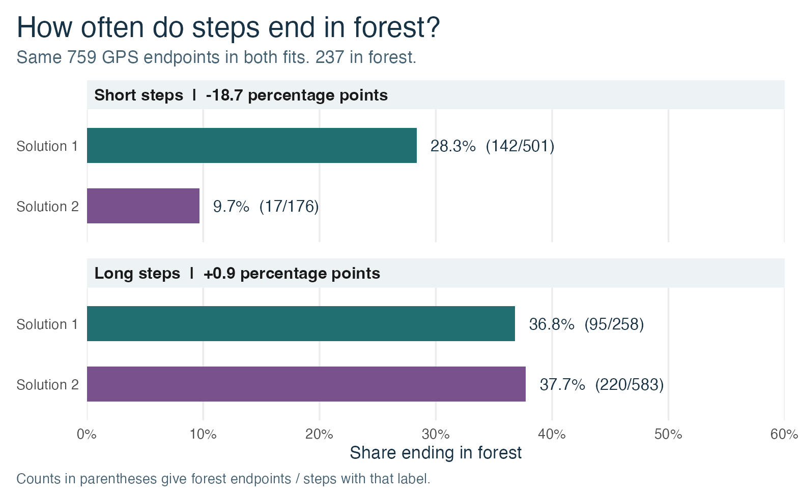

When two fits label the same deer track differently
Source:vignettes/deer-restarts.Rmd
deer-restarts.RmdFit a two-state model several times and you may get different state sequences for the same track. Here we use the GPS track of one red deer to see where this happens. We give the states the names Short steps and Long steps in order of fitted mean length. The names describe movement over a six-hour interval.
Fit the model from several starting values
The track comes from the deer
dataset in amt. We kept a step when its interval and
the preceding interval were both within ten minutes of six hours and in
the same source burst. The preceding interval supplies the incoming
heading for the turn angle. This leaves 759 steps in 29 uninterrupted
segments. The prepared data are included with the package, with
coordinates and lengths in kilometres.
## Warning: package 'ggplot2' was built under R version 4.5.2
theme_set(theme_ssf())
knitr::opts_chunk$set(dev.args = list(bg = "white"))
library(patchwork)
gps <- readRDS(system.file("extdata", "deer-restart-steps.rds",
package = "behavSSF", mustWork = TRUE))
steps <- prepare_ssf_steps(gps, density_measure = "area", time = "time_utc")
short_long <- ssf_taxonomy(
"short_long", c("Short steps", "Long steps"),
rules = function(s) {
c(length_ratio = s$metrics["Long steps", "mean_step"] >
2 * s$metrics["Short steps", "mean_step"])
}
)We require the long-step mean to be more than twice the short-step mean. This is a rule for this example. The model uses step lengths and turns with exact normalisation. For a first look at another track, a call like this runs 30 random starts.
check <- diagnose_ssf_restarts(steps, short_long, n_starts = 30, seed = 60200)For the deer we use the 176 starts listed at the end of the page. Each start gets its own fit, and all fits use the same model and data.
check <- diagnose_ssf_restarts(steps, short_long, starts = starts)
print(check)## HMM-SSF restart diagnostic (short_long)
## 176 starts, 2 solutions, 14 unsuccessful
## Solution Starts Log likelihood Changes vs 1
## 1 67 59.65201 0
## 2 95 52.38869 325The solution numbers follow the log likelihood, with the highest
value first. Two fits count as the same solution if their likelihoods
and parameters are close and they give the same decoded labels after
aligning the states. check$restarts gives the outcome of
every start, including the reason for each rejection.
| Solution 1 | Solution 2 | Unsuccessful | |
|---|---|---|---|
| Broad starts | 21 | 17 | 10 |
| Near A | 37 | 3 | 0 |
| Near B | 1 | 39 | 0 |
| Package starts | 8 | 36 | 4 |
| Solution | Label | Fitted mean (m) | Decoded steps |
|---|---|---|---|
| 1 | Short steps | 118.7 | 501 |
| 1 | Long steps | 802.6 | 258 |
| 2 | Short steps | 101.1 | 176 |
| 2 | Long steps | 459.0 | 583 |
Find the steps that switch
The comparison returns one row per observed step, with the GPS
columns, both labels and a flag for a change.
pair$transitions counts the steps for every pair of labels.
Read the rows as the labels under solution 1 and the columns as the
labels under solution 2.
pair <- compare_ssf_solutions(check, from = 1, to = 2)
pair$transitions## to
## from Short steps Long steps
## Short steps 176 325
## Long steps 0 258
changed <- subset(pair$steps, .changed,
select = c(ID, start_fix, end_fix, time_utc, step, .state_from, .state_to))
head(changed, 4)## ID start_fix end_fix time_utc step .state_from
## 4 segment-1 5 6 2008-03-31 06:01:45 0.155055628 Short steps
## 5 segment-1 6 7 2008-03-31 12:01:11 0.006083772 Short steps
## 6 segment-1 7 8 2008-03-31 18:01:55 0.004472593 Short steps
## 7 segment-1 8 9 2008-04-01 00:01:24 0.113036952 Short steps
## .state_to
## 4 Long steps
## 5 Long steps
## 6 Long steps
## 7 Long stepsOn this track, 325 of 759 steps change label between the two fits shown here. The switches go from Short steps in the first fit to Long steps in the second. The first fit gives a larger mean to its long-step state and assigns fewer steps to it. The label of any one step also depends on its turn and the sequence of nearby observations.

An orange dot marks the end of each step that switches. At this
scale, several short movements overlap. Use segment to zoom
in on a continuous part of the track. Below, each column in the strip
represents one step. The dot in the second row marks a change from the
first row.
longest <- names(which.max(table(pair$steps$ID)))
track <- subset(pair$steps, ID == longest)
strip <- rbind(
data.frame(step = track$.segment_step, fit = "Solution 1", label = track$.state_from),
data.frame(step = track$.segment_step, fit = "Solution 2", label = track$.state_to)
)
strip$fit <- factor(strip$fit, levels = c("Solution 2", "Solution 1"))
route <- plot(pair, segment = longest) +
labs(title = "Longest uninterrupted segment",
x = "Relative east (km)", y = "Relative north (km)")
labels <- ggplot(strip, aes(step, fit)) +
geom_tile(aes(fill = label), width = .97, height = .8) +
geom_point(data = subset(track, .changed),
aes(.segment_step, "Solution 2"), inherit.aes = FALSE,
colour = "#AE3E1B", size = 1.5) +
scale_fill_manual(values = c("Short steps" = "#DCE7EE", "Long steps" = "#506879")) +
labs(x = "Step within segment", y = NULL, fill = NULL) +
theme_ssf() +
theme(panel.grid = element_blank(), legend.position = "bottom")
route / labels + plot_layout(heights = c(3, 1.2))
To save the list of switches, use
write.csv(changed, "changed-steps.csv", row.names = FALSE).
The fix IDs refer to rows of the original deer dataset. The timestamp is
for the end fix. For the smoothed state probabilities under each fit,
see pair$posterior_from and pair$posterior_to.
They follow the same step order as pair$steps.
Which solution should you use?
For the main map of the deer’s movement, use solution 1. Both solutions passed the checks and fit the same model to the same GPS steps. Solution 1 has the higher log likelihood (59.65 versus 52.39), so it gives the better fit to these steps among the solutions we found. Solution 2 came up more often, but that count depends on the starting values we tried.
Keep the labels Short steps and Long steps when describing movement from these GPS fixes. To interpret a state as travelling or foraging, look for separate evidence. For example, compare the labels with field observations or accelerometer records for the same intervals, if you have them. Saldanha et al. (2023)
If your conclusion uses the labels, repeat the calculation with solution 2. For example, solution 1 labels 34% of the steps as Long steps, compared with 77% under solution 2. Report both values if the share matters to your question. On the map, the orange marks show where the choice of fit changes the label.
Do short and long steps end in forest?
For each label, divide the number of steps that end in forest by the
number of steps with that label. We read forest cover from the 25 m cell
at each GPS endpoint in the forest
map supplied with amt. The prepared data store this
value in end_in_forest. The movement fits use lengths and
turns, and we bring in the forest map after fitting to describe where
the steps end.
end_forest <- pair$steps$end_in_forest
forest_counts <- function(state, solution) {
counts <- table(state, factor(end_forest, levels = c(FALSE, TRUE)))
data.frame(state = rownames(counts), solution = solution,
forest = as.integer(counts[, "TRUE"]), total = as.integer(rowSums(counts)))
}
forest_share <- rbind(
forest_counts(pair$steps$.state_from, "Solution 1"),
forest_counts(pair$steps$.state_to, "Solution 2")
)
forest_share$share <- with(forest_share, forest / total)
The choice of solution matters most for short steps. Of the 325 steps that switch to Long steps in solution 2, 125 end in forest. The share falls among the remaining short steps, while the share for long steps changes little. These proportions describe the observed endpoints. To assess forest selection, we would also need to compare used endpoints with available ones.
Starting values used for the deer
We used 48 starts from the package’s default initialisation at two
spreads, 48 starts spread across a wider range of movement and
transition values, and 40 near each of two earlier fits. A and B here
refer to the centres of those last two sets of starting values. The
likelihood determines the final solution numbers. This code creates the
list passed to starts above.
anchors <- lapply(c(A = 9871L, B = 1729L), function(seed) {
fit_ssf(steps, n_starts = 8, short_iter = 100, long_iter = 900,
seed = seed, normalization = "exact")
})
tpm <- function(p) rbind(c(p[1], 1 - p[1]), c(1 - p[2], p[2]))
broad <- function() {
limits <- log(stats::quantile(steps$step, c(.1, .9), names = FALSE))
mean <- sort(exp(stats::runif(2, limits[1], limits[2])))
shape <- exp(stats::runif(2, log(.5), log(6)))
list(coefficients = rbind(step = -shape / mean, log_step = shape - 2,
cos_angle = stats::runif(2, -1.2, 1.2)),
transition = tpm(stats::runif(2, .2, .94)))
}
near <- function(fit, spread) {
b <- stats::coef(fit)
i <- order(movement_metrics(b, "area")$mean_step)
b <- b[, i, drop = FALSE]
b["step", ] <- -exp(log(-b["step", ]) + stats::rnorm(2, sd = spread))
b["log_step", ] <- exp(log(b["log_step", ] + 2) + stats::rnorm(2, sd = spread)) - 2
b["cos_angle", ] <- b["cos_angle", ] + stats::rnorm(2, sd = spread)
self <- stats::plogis(stats::qlogis(diag(fit$transition)[i]) +
stats::rnorm(2, sd = spread))
list(coefficients = b, transition = tpm(self))
}
family <- rep(c("Package starts", "Broad starts", "Near A", "Near B"), c(48, 48, 40, 40))
seeds <- 60000L + seq_along(family)
spreads <- c(rep(c(.5, 1), each = 24), rep(NA_real_, 48),
rep(rep(c(.10, .25), each = 20), 2))
starts <- lapply(seq_along(seeds), function(i) {
set.seed(seeds[i])
switch(family[i],
"Package starts" = list(seed = seeds[i], spread = spreads[i]),
"Broad starts" = list(initial_values = broad()),
"Near A" = list(initial_values = near(anchors$A, spreads[i])),
"Near B" = list(initial_values = near(anchors$B, spreads[i])))
})
names(starts) <- familyGPS fixes from Verein für Wildtierforschung Dresden und Göttingen
e.V., distributed with amt
0.3.1.0. The preparation script in the package source is
data-raw/prepare-deer.R.
Reassess a rejected fitted solution
The solution table groups only starts that pass the chosen taxonomy. Rejected starts stay in the log. By default, their full fitted models are not retained. If you want to try a different interpretation afterwards, ask to keep them:
check <- diagnose_ssf_restarts(steps, short_long, n_starts = 30L,
seed = 60200L, keep_rejected = TRUE)
rejected <- which(check$restarts$status == "rejected")
if (length(rejected)) {
fit <- check$all_fits[[rejected[1L]]]
assess_taxonomy(fit, another_taxonomy, convention = "area")
}Here another_taxonomy is a specification you have
defined for the same state count. Retaining fits uses more memory. A
failed optimisation still has no fitted object, so its entry is
NULL.